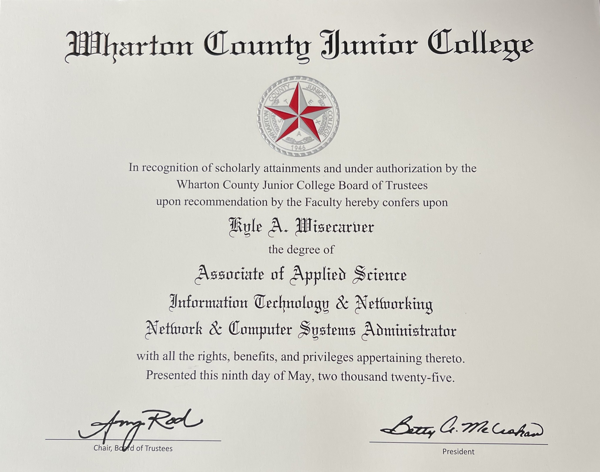
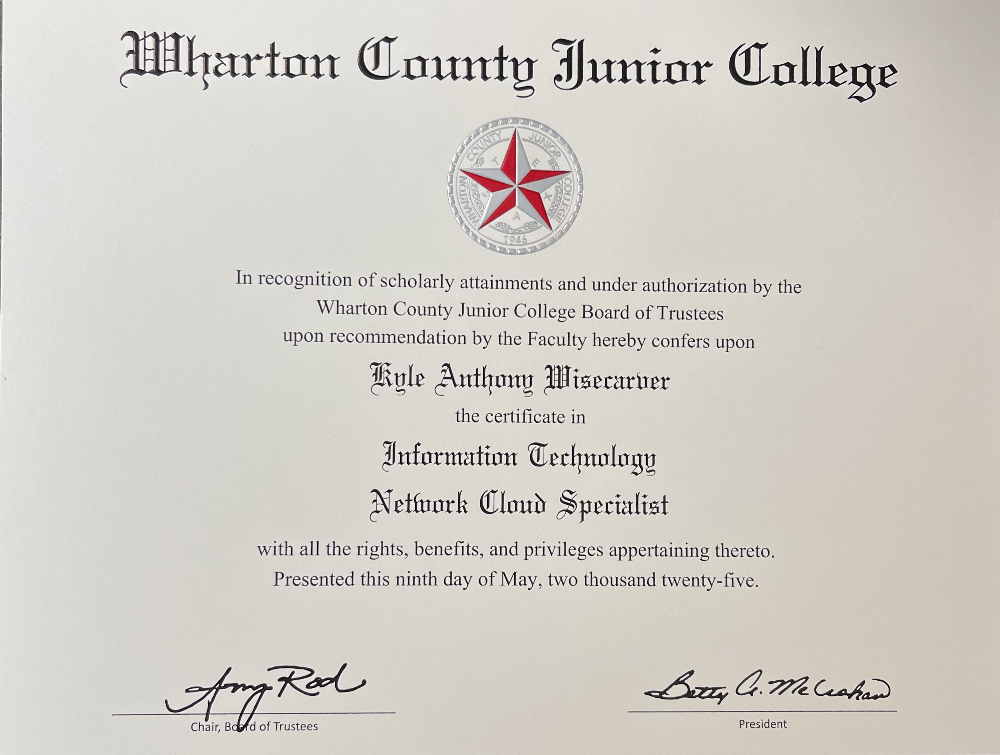

Education
Associate of Applied Science in Network and Computer Systems Administration
Wharton County Junior College, Wharton, TX - May 2025
GPA: 3.33
Developed expertise in network infrastructure, cybersecurity, and systems optimization. Completed advanced coursework in cloud technologies and systems administration.
Level 1 Certificate - Network Cloud Specialist
Wharton County Junior College, Wharton, TX - May 2025
Level 1 Certificate - Security Specialist
Wharton County Junior College, Wharton, TX - May 2025
Accelerated Application Development Bootcamp
devCodeCamp, Milwaukee, WI - Mar 2022 - Jun 2022
Mastered front-end and back-end development using React.js, Django, and Linux. Designed a fully responsive web application addressing real-world client challenges. Gained practical experience in agile methodologies and collaborative team projects.
Organizational Leadership
Community College of the Air Force, Phoenix, AZ - 2009 - 2012
Applied leadership principles in coursework aligned with military operational roles. Strengthened skills in personnel management and process improvement.
Certifications and Badges

AWS Cloud Practitioner Essentials, 2025
Cloud Computing Fundamentals, 2024

AWS Cloud Quest: Cloud Practitioner, 2024

Artificial Intelligence Fundamentals, 2024

Web Development Fundamentals, 2024

Information Technology Fundamentals, 2024
User Experience Design Fundamentals, 2024
Working in a Digital World: Professional Skills, 2024
Fundamentals of Sustainability and Technology, 2024
Project Management Fundamentals, 2024

Data Fundamentals, 2024
Open Source Origin Stories: Adventures in Hybrid Cloud, AI Ethics, and Open Source Technologies, 2024
Publications
Quantum LiFi - Edge-2-Edge at Light Speed
High Tech News Journal, Electronic Technicians Association, Mar/Apr 2025
Technical Skills
- UX/User Experience
- Shopify Platform
- HTML/CSS/JavaScript
- Leadership
- Agile Methodologies
- Interpersonal Communication
- AWS/Cloud Computing
- Python/Django
- React.js
- Adaptability
- Problem-Solving & Critical Thinking
Professional Experience
Web Administrator
The Art Cellar Houston, Houston, TX - Apr 2024 - Present
- Spearheaded two comprehensive SEO audits in Q3 2024 and Q2 2025, aligning website strategies with Google's 2025 search algorithm updates to maintain top search engine rankings for key art-related terms.
- Diagnosed and resolved a critical issue with a non-firing tracking pixel, ensuring accurate marketing data collection and enabling the recovery of significant advertising funds.
- Maintained website performance, security, and usability, implementing robust measures to protect against cyber threats and ensure a seamless user experience.
- Resolved 100% of reported technical issues within standard timeframes, minimizing downtime and maintaining operational efficiency.
- Optimized e-commerce functionality using Shopify tools, enhancing site navigation and checkout processes to improve customer engagement.
Web Application Developer
Lowe Lab Art, Houston, TX - May 2023 - Jun 2024
- Built responsive websites using HTML, CSS, and JavaScript with Bootstrap integration.
- Developed e-commerce platforms with customized SKU databases.
- Designed mobile-first interfaces, improving client accessibility and satisfaction.
Independent Consultant
Scrap-Soldier.com, Temecula, CA - Jan 2023 - May 2023
- Designed web solutions using React.js and Django to streamline business operations.
- Led projects combining responsive design and backend development.
- Completed 100% of client projects on time, maintaining high satisfaction rates.
Culinary Manager
Darden Restaurants, Houston, TX - Jun 2016 - May 2022
- Managed daily operations, hiring, and team training, reducing inventory waste by 15%.
- Recognized in Darden's Diamond Club for exceptional leadership and operational excellence.
- Organized business partner relationships to enhance operational efficiency.
Senior Airman
United States Air Force, ROK, South Korea - Jun 2009 - Nov 2014
- Maintained and inspected F-16 Aircraft Armament Systems, achieving 98% mission readiness.
- Trained 100+ airmen quarterly in safety and technical operations.
- Led 23+ events as an Honor Guard Member with a six-member team.